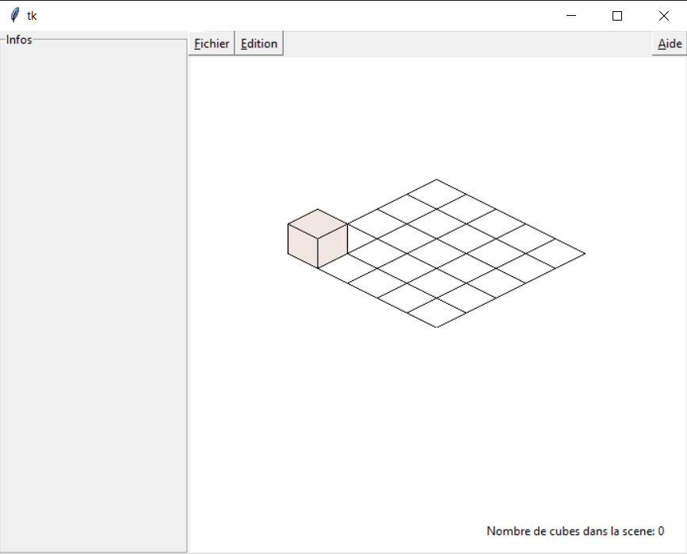

Le travail demandé était de réaliser une interface ergonomique de construction de scènes en perspective dimétrique,
Au lancement du logiciel, une première fenêtre apparaît, elle permet de configurer la scène:
Différentes options sont disponibles:
Au lancement de la scène avec vos propres paramètres, une grille apparaît, une prévisualisation est disponible lors du survol de la souris sur la grille ou sur un cube.
CLic gauche: Place un cube
CLic droit: Selectionne un cube (Il sera colorié en rouge)
Le code est disponible sur github